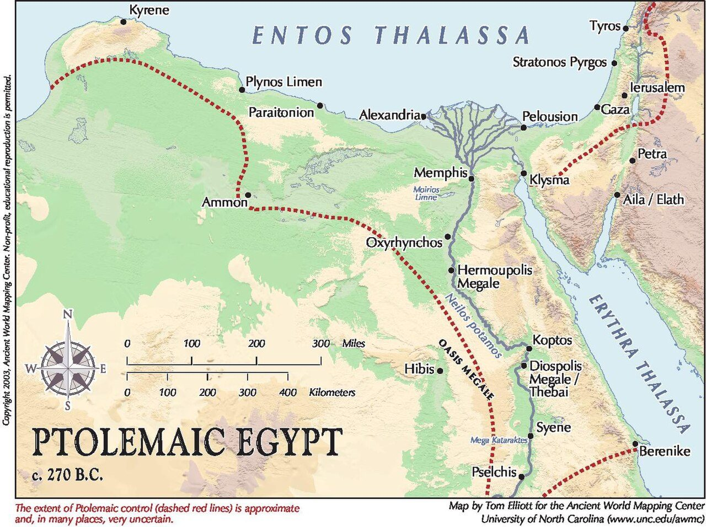

Unit 7 · Women in ancient Greece · Lesson 19
The timed extended response under exam conditions
Four minutes of reading time, five to plan and thirty-seven to write: today you write a full response on your own, with no notes and no plan to copy.
Year 11 Ancient History · Present with → or space · Read on a phone with R

Images: Tom Elliott, Ancient World Mapping Center (CC BY-SA 4.0). Full details on the last slide.
Connect · 3 minutes · books closed · everyone writes · press K, click 3, then Start
One piece of papyrus evidence, and what it shows
Name one papyrus from our unit and say what it shows.
Add one thing your papyrus cannot show.
Heracleides and Demetria, Elephantine, 311/310 BCE (Hunt and Edgar’s translation). A Greek marriage in writing, with terms for the husband too: “It shall not be lawful for Heracleides to bring home another wife in insult of Demetria”. It cannot show how every couple married.
221–220 BCE: Demetria, daughter of Apollodotus, lends 400 drachmas “with her guardian Apollophanes”. It shows a woman lending money, with her guardian named. It cannot show what every woman did.
Greek loans of 131–127 BCE name her husband Dryton as guardian (a Greek fragment notes none); Vandorpe’s list names none on her demotic (Egyptian-law) loans. That is silence, not proof that there was none. One woman, two legal systems; not all women.
Philista (about 221 BCE) petitioned in her own name; the widow Nikaia (218 BCE) asked for a guardian: “I have no relative who can serve as my guardian”. They show women writing to the king, not how often.
Today: a full extended response, written under exam conditions.
Learning intentions and success criteria · 2 minutes
Today’s goals
- write an extended response under exam conditions
- use reading time to choose and deconstruct a question
- plan in five minutes and open with a thesis of degree
- write three body paragraphs and a conclusion in the time
Syllabus outcomes: AH-11-02 proposes ideas about the varying causes and effects of events and developments · AH-11-04 accounts for the different perspectives of individuals and groups in their historical context · AH-11-05 analyses different types of sources for evidence to support a historical account or argument · AH-11-07 communicates historical understanding, applying historical knowledge, terms and concepts. Life Skills: AH-LS-06 investigates people, events or developments of the ancient world · AH-LS-11 communicates information about the past using historical terms and concepts.
Your questions · the conditions · ¾ minute · read them, don’t write yet
Two questions, one response, exam conditions
1To what extent did the role and status of Greek women change from Classical Athens to Ptolemaic Egypt?
2Assess the reasons for the status and role of Greek women in religious and political life.
- Choose one question in reading time. You write one response.
- Individual and silent. A pen, your writing booklet and the clock: no notes, and no plan from Lesson 18. You plan again from memory.
- Copy your question at the top and box the verb. Leave a margin for feedback and skip a line between paragraphs.
- Phones away. Approved adjustments as agreed with your teacher.
- The class checklist stays on display. Your response is collected.
- Writing focus: a thesis of degree · 5
- Reading time: think only · 4
- Plan · 5
- Write · 37
- Check · 4
Key vocabulary · the words for today’s writing
Words for a timed extended response
| Writing terms | Meaning |
|---|---|
| Reading time | Time before writing: choose a question and deconstruct it, in your head (in the HSC you may not write or mark the paper). |
| To what extent | Not a glossary word: NESA calls it a self-explanatory term. It asks for a judgement of degree (largely, partly, only for a few), argued with evidence. |
| Assess | ‘Make a judgement of value, quality, outcomes, results or size.’ (NESA, Glossary of key words) Department advice: a judgement of degree, weighed against evidence on both sides. |
| Judgement of degree | entirely · largely · to a significant extent · partly · only to a limited extent · not at all |
| Five-minute plan / thesis of degree | Deconstruct → thesis → three topic sentences → evidence → counter-view / a thesis that answers with a degree and its reasons. |
| Added today | Meaning |
| Time check | A point in your writing time by which a part of your response should be finished; your teacher calls it from the clock. Department advice. |
| Content terms from the Connect | Meaning |
|---|---|
| Papyrus | Writing material made from a reed; documents survive in Egypt’s dry climate. |
| Kyrios | A woman’s legal guardian — her father, then her husband — who acted for her in law. |
| Demotic | The everyday Egyptian script, used for Egyptian-law contracts. |
| Petition (enteuxis) | A written request to the king for justice or help. |
| Kanephoros | ‘Basket-bearer’: a woman who carried the sacred basket in a procession. The kanephoros of Arsinoe Philadelphos is named in the date of documents. |
1 · Ready to write · Writing focus · 5 minutes · I do → We do → apply
Writing focus: a thesis of degree, in one breath
A thesis of degree answers the question with one degree and its main reasons. Under time you have one minute to plan it, so you say it first, in one breath.
A different question: To what extent was Arsinoe II a powerful queen?
Worked example · a thesis for that question · written for this lesson
Arsinoe II was powerful only to a limited extent: she was honoured in cult and on coins, but mostly after her death, and her influence on Ptolemy II’s policy is debated.
A degree from the scale: not yes or no
A first reason, with its limit
A second reason, hedged where the evidence is
In your plan you write your own thesis for the question you chose: your degree and your main reasons. Your Writing toolkit (booklet pages 3–4): the modality scale and degree words.
1 · Choose the question you will write on.
2 · Say it. Say your thesis to your partner, in one breath: a degree and your main reasons.
3 · Name it. Your partner names the degree you gave, using the scale. If they can’t, say it again.
- entirely
- largely
- to a significant extent
- partly
- only to a limited extent
- not at all
Then swap. Nothing is shown for your questions: your degree and your reasons are yours.
2 · Reading time · 4 minutes · timer: press K if it is closed, click 5, then Start; reading time ends at 1:00 · think only: no writing, no marking
Reading time: think now, write later
- 1DeconstructDeconstruct each question first: verb · topic · limits · what your answer must do. Say each step in your head.
- 2Choose one questionChoose the one you can support with the most precise evidence from our unit (department advice).
- 3Hold it in your headPens down. You will write your deconstruction and your plan in the plan time that follows.
NESA’s 2027 HSC student guide says: “You must not write on or mark your exam in any way or use any equipment (including highlighters).” So practise it today: think only. In the plan time, write your deconstruction, then your plan.
1 · To what extent did the role and status of Greek women change from Classical Athens to Ptolemaic Egypt?
2 · Assess the reasons for the status and role of Greek women in religious and political life.
Nothing is written or marked. When your teacher says “Plan”, the five-minute plan clock starts and you may write.
2 · Plan · 5 minutes · timer: click 5, then Start (press K only if it is closed) · on your plan page
Plan: deconstruct, thesis, three points, counter-view
At 4:00 left: check your deconstruction against these rows, then write your thesis.
| Step | Question 1 | Question 2 |
|---|---|---|
| Verb | to what extent: not a glossary word; NESA calls such terms self-explanatory. It asks for a judgement of degree, not yes or no. Department advice: treat it as assess for a degree | assess: ‘Make a judgement of value, quality, outcomes, results or size.’ So: judge the reasons, how far each explains, not just list them |
| Topic | change in the role and status of Greek women: what they did, and how they stood. What stayed the same counts too | the reasons for women’s status and role: why they held the roles they did |
| Limits | Greek women (not Egyptian women); Classical Athens, then Ptolemaic Egypt; the evidence you have seen, each piece with its maker and its limit | religious and political life only (not the family or work); Greek women in Classical Athens and the Hellenistic Greek world; the evidence you have seen |
| Do | a thesis that gives one degree and its main reasons; evidence from both settings; continuity and change both weighed; a counter-view; the same degree in your last sentence | a thesis that judges the reasons: name them, say how far each explains and which mattered most; evidence for each, with its maker and date; a counter-view; the same judgement in your last sentence |
Reading time was for thinking only, as in the HSC. Your plan is part of your writing time: write it on your plan page.
- 5:00 → 4:00Deconstruct: write verb · topic · limits · do
- 4:00 → 3:00Thesis of degree: your degree and your main reasons
- 3:00 → 1:00Three topic sentences, each with its evidence
- 1:00 → 0:00One counter-view: the best case against your own degree. Then jot your time checks in the margin: 5 · 14 · 23 · 32
Plan sheet with a box for each step. Thesis frame, every slot yours: “… was … , because … and … , although … .” Your Writing toolkit (booklet pages 3–4): the modality scale and degree words.
Attempt question 1. In the Evaluate move of every body paragraph, weigh one historian’s view from our unit: say whose it is and what it rests on.
3 · Writing · 37 minutes · individual and silent · press K, click 20, then Start · then 12 · then 5
1To what extent did the role and status of Greek women change from Classical Athens to Ptolemaic Egypt?
2Assess the reasons for the status and role of Greek women in religious and political life.
- Introduction: context, then your thesis: a degree, previewing your three paragraphs.
- Three body paragraphs: a topic sentence linked to your thesis, then Evidence, Analyse, Evaluate, Resolve.
- Conclusion: your thesis, refined; your reasons drawn together; why the judgement matters; a decisive final sentence; no new evidence.
- Sources from memory, each with who made it and when.
Your plan, with its frames. Thesis frame: “… was … , because … and … , although … .” Listen for the time checks.
Attempt question 1. In the Evaluate move of every body paragraph, weigh one historian’s view from our unit.
- MinsPartFinish byClock
- 0–5Introduction: context, then thesisminute 515:00 · run 1
- 5–14Body paragraph 1minute 146:00 · run 1
- 14–23Body paragraph 2minute 239:00 · run 2
- 23–32Body paragraph 3minute 320:00 · run 2
- 32–37Conclusion, the last 5 minutes: same degree as your thesis?pens down0:00 · run 3
The timer runs 20, then 12, then 5 minutes. When a run ends at 0:00 your teacher starts the next one at once, and you keep writing.
Introduction: context · Thesis: a degree, previewing your arguments in order · Body paragraphs: topic sentence, the five moves, the degree held to the Resolve · Evidence: precise, more than one kind of source, a reference, every voice attributed · Language: modality matches the evidence, tense, links · Conclusion: same degree, why it matters, no new evidence, decisive
Check · 4 minutes · tick 2 · circle 1 · hand in 1 · timer: click 3, then Start (press K only if it is closed)
Check your response against our checklist
- Tick each point your response meets. Be honest: it helps your feedback.
- Circle one point you are unsure of, and write why in the margin.
- Hand in your response with your plan.
names the paragraph, the move and the doubt, for example: “¶ 2, Evaluate: I named a limit of the source but didn’t weigh it.”
Next lesson: your response comes back with one strength and one next step, each coded to the checklist, and you rewrite one paragraph.
Finish your notes If time · or at home
Summary: three sentences on writing under exam conditions
- What do you do in reading time, and what must you not do?
- How did you use your 37 minutes, and what would you change?
- Which checklist point will you work on next, and why?
In reading time I only think: I choose a question and deconstruct it in my head, and I write nothing until the plan. I finished my introduction by minute 5 but ran over in body paragraph 2, so my conclusion was one sentence; next time I will close each paragraph in a sentence when the time check comes. I will work on my Evaluate moves, because I named a counter-view but did not weigh it.
Practice and review · 1 of 3 · true, false, justify
True or false? Justify your answer
- 1In HSC reading time you may underline words on the paper, as long as you don’t use a highlighter. False — NESA’s 2027 HSC student guide says: “You must not write on or mark your exam in any way or use any equipment (including highlighters).”
- 2Today, reading time was for choosing and deconstructing a question, and the plan was written in the five minutes after it. True — you thought in reading time and wrote your deconstruction and plan as part of your writing time.
- 3In 37 minutes of writing, the introduction should be finished by minute 5 and the conclusion should have the last 5 minutes. True — the body paragraphs are finished by minutes 14, 23 and 32 (department advice).
- 4A thesis that says “yes” or “no” is a thesis of degree. False — a degree is a word on the scale (entirely, largely, to a significant extent, partly, only to a limited extent, not at all) with its main reasons.
- 5“To what extent” is one of NESA’s glossary key words. False — NESA calls it a self-explanatory term. Department advice: treat it as a judgement of degree.
- 6When a time check comes and you are mid-paragraph, finish the paragraph in full and shorten the next one. False — that takes minutes from a later part. Close the paragraph in a sentence, then start the next on time (department advice).
Practice and review · 2 of 3 · writing · read the clock, then fix a thesis
Read the clock, then fix a thesis
You write for 37 minutes on three runs of the clock: 20, then 12, then 5. For each reading, how many minutes of writing have passed, and which part should you be starting?
- 15:00 on run 1 5 minutes: body paragraph 1 (the introduction should be finished).
- 6:00 on run 1 14 minutes: body paragraph 2.
- 9:00 on run 2 23 minutes: body paragraph 3.
- 0:00 on run 2 32 minutes: the conclusion; start run 3.
- 1:00 on run 3 36 minutes: one minute left, for your last sentence.
A different question: To what extent was Arsinoe II a powerful queen? Here is a student’s thesis. Say what is missing, then rewrite it in one breath.
Arsinoe II was a powerful queen, although some historians disagree.
It has no degree: “powerful … although” is a yes with a limit added. A fix: Arsinoe II was powerful only to a limited extent, because her cult and coins mostly followed her death, while her influence on Ptolemy II’s policy is debated.
Any thesis with a degree from the scale and a reason the evidence supports is a fix.
Practice and review · 3 of 3 · cover your notes and answer from memory
Quick checks
- What do you do in reading time, and what must you not do? Choose a question and deconstruct it, in your head. You must not write or mark anything: in the HSC, “You must not write on or mark your exam in any way or use any equipment (including highlighters).”
- What are the four steps of deconstructing a question? Verb, topic, limits, and what your answer must do.
- Name the steps of the five-minute plan, with their minutes. Deconstruct 1, thesis of degree 1, three topic sentences with evidence 2, one counter-view 1.
- What does a thesis of degree give? One degree from the scale (entirely, largely, to a significant extent, partly, only to a limited extent, not at all) and its main reasons, not yes or no.
- When do the time checks fall, and what does the clock read? Introduction by minute 5 (15:00, run 1); body paragraphs by minutes 14 (6:00, run 1), 23 (9:00, run 2) and 32 (0:00, run 2); the conclusion in the last 5 (run 3).
- What must a conclusion do, and what must it not do? Refine the thesis in the same degree, draw the reasons together and end on a decisive judgement; add no new evidence, and do not just summarise.
Sources and credits
Where everything comes from
NSW Education Standards Authority (NESA), Glossary of key words (assess, quoted word for word), and NESA, 2027 Higher School Certificate Rules and Procedures: Student guide (August 2026), p. 19, step 3 “Reading time” (quoted word for word).
Connect: P. Eleph. 1 (311/310 BCE) and Select Papyri I 65 (221–220 BCE): trans. A. S. Hunt and C. C. Edgar, Select Papyri I (Loeb Classical Library, 1932), as on attalus.org (P. Eleph. 1) and attalus.org (I 65). P. Enteux. 22 (Nikaia, 218 BCE): the English on attalus.org, Enteuxeis: Greek petitions to the king (translator not named), from O. Guéraud, Enteuxeis (1931). P. Enteux. 82 (= Select Papyri II 269; Philista, about 221 BCE): Hunt and Edgar (Loeb, 1934), on attalus.org. Apollonia’s loans: Katelijn Vandorpe, “Archive of Dryton, Apollonia and Descendants”, Trismegistos Archives (2011).
In the notes: the Chremonides decree (IG II³ 1 912), trans. Sean Byrne, Attic Inscriptions Online (CC BY-SA 3.0); S. Caneva, Historia 62.3 (2013), open copy. The thesis on Arsinoe II, the plan clock, the time checks and the minutes inside them are written for this lesson, from Lessons 12 to 18; the time checks and the plan’s steps are the program’s.
Outcomes and content: NSW Education Standards Authority (NESA), Ancient History 11–12 Syllabus (2024). © NESA.
- Map of Ptolemaic Egypt about 270 BCE (Ancient World Mapping Center) · Map by Tom Elliott, Ancient World Mapping Center (uploaded by Awmcstaff) · CC BY-SA 4.0 · source
The map is openly licensed and was resized for the web. It is shared under the licence shown.